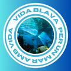

Coneix els problema de contaminació marina i com ajudar
al fet que aquest problema es torni mes gran
Els nostres oceans s'estan convertint en un abocador gegant de plàstic. Des de microplàstics invisibles fins a enormes xarxes de pesca abandonades, la contaminació plàstica asfíxia, embulla i enverina la vida marina. Tortugues que confonen bosses amb meduses, ocells marins amb estómacs plens de fragments plàstics i peixos que ingereixen microplàstics que després arriben a la nostra taula... la magnitud del problema és alarmant i les seves conseqüències s'estenen per tota la cadena tròfica.
Com pots ajudar a solucionar aquest problema? 🤔
L'absorció excessiva de diòxid de carboni (CO₂) per part dels oceans, resultat de la crema de combustibles fòssils, està provocant un augment en l'acidesa de l'aigua. Aquest fenomen dificulta la formació de petxines i esquelets de molts organismes marins, com a corals, mol·luscos i crustacis, que són la base d'importants cadenes alimentàries. L'acidificació amenaça la supervivència d'ecosistemes sencers i té greus implicacions per a la biodiversitat marina i la pesca.
Com pots ajudar a solucionar aquest problema? 🤔
Les pràctiques de pesca destructives, com l'arrossegament de fons, devasten els llits marins, destruint hàbitats essencials com els esculls de coral i els llits d'algues on innombrables espècies troben refugi i aliment. A més, les xarxes i aparells de pesca abandonats, coneguts com a "pesca fantasma", continuen atrapant i matant indiscriminadament a animals marins durant anys. Aquesta doble amenaça posa en perill la biodiversitat i l'equilibri dels ecosistemes oceànics
Com pots ajudar a solucionar aquest problema? 🤔